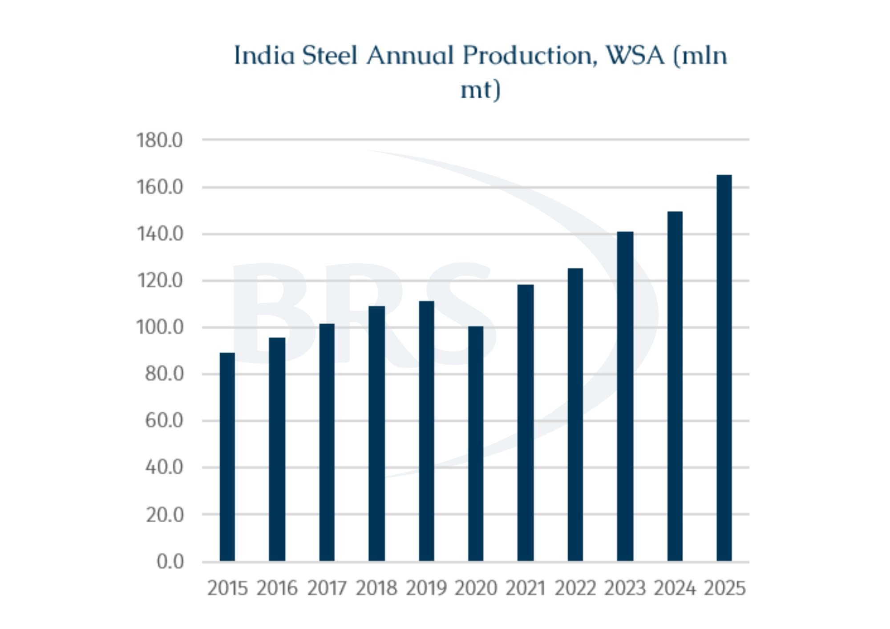
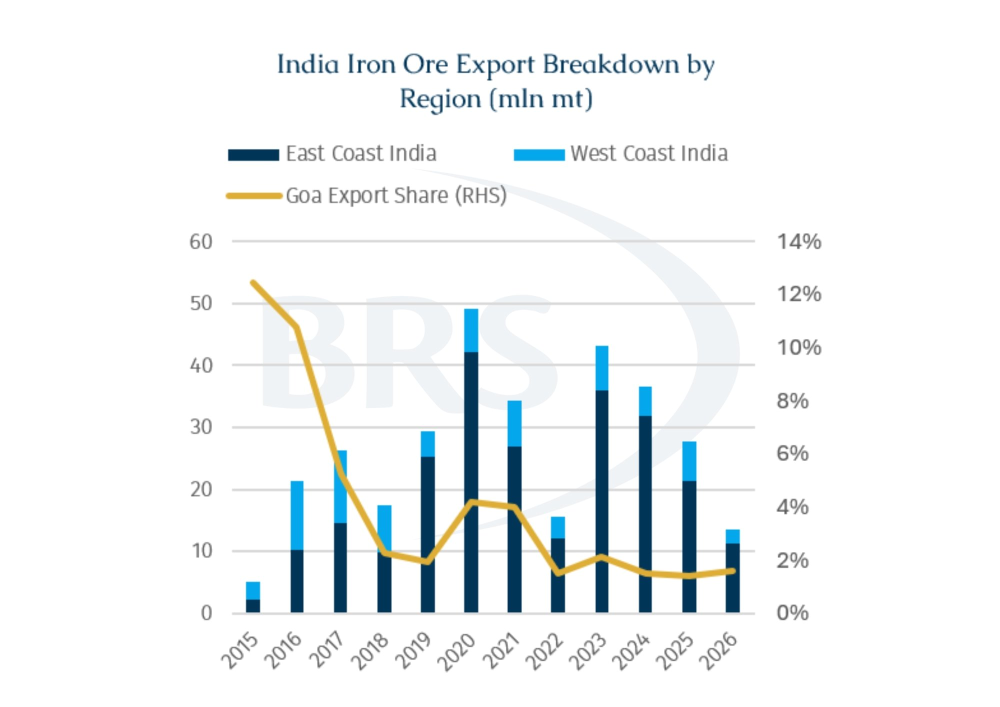
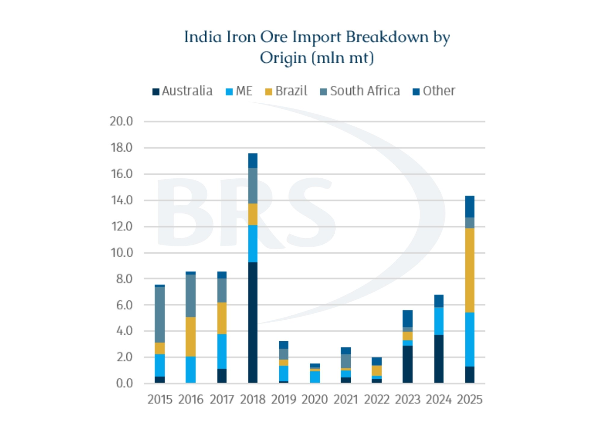

The revival of iron ore mining in India's Goa state has recently taken another step forward as the Goan government has granted operating permits to nine mining companies. Collectively these permits account for approximately 7.5mt of annual iron ore production capacity. This should see a rise in mining activity in September, once the region's monsoon season has passed.
From the perspective of the shipping market, an additional 7.5mt of approved production capacity is unlikely to materially alter the overall supply-demand balance. However, the significance of this development lies less in the volume itself and more in the broader questions it raises regarding India's evolving role in global iron ore trade.
Over the past decade, the dynamics of India's steel industry have changed considerably. While market attention has increasingly focused on India as a major steel producer and a potential growth market for iron ore imports, the country remains the world's fifth-largest seaborne iron ore exporter. Unlike traditional exporters such as Australia and Brazil, whose exports have remained relatively stable, India's exports have been far more volatile.
This reflects the influence of fluctuations in domestic steel demand, resource policies, and regulatory developments. The most recent example occurred in 2022, when the Indian government imposed a 50% export duty on low-grade iron ore in an effort to secure supply for the domestic steel industry. The measure led to iron ore shipments effectively grinding to a halt for several months.
At the same time, India is pursuing an ambitious expansion of its steel industry. Under the National Steel Policy, the country is targeting 300 mt of steelmaking capacity by around 2030. While this figure is often viewed as an aggressive policy objective, it is not entirely disconnected from recent growth trends.
According to data from the World Steel Association, India's crude steel production increased from 100.3 mt in 2020 to 164.9 mt in 2025, equating to a compound annual growth rate of 10.5%. Reaching the 300 mt target within the next five years would require annual growth of roughly 12-13%.
Although significant uncertainties remain regarding infrastructure development, raw material supply, and investment execution, India's ongoing industrialisation and urbanisation continue to support expectations for further growth in steel demand.

However, there is uncertainty concerning whether Goa can actually deliver a sustained production recovery. From a resource perspective, Goa possesses more than 1bln tonnes of iron ore reserves, although the majority consists of relatively low-grade material historically destined for export. In 2010, annual iron ore exports from Goa exceeded 50 mt. Yet since 2012, Goa, one of the most important iron ore exporting regions on India's west coast, has been heavily affected by political and legal issues which have driven repeated cycles of production suspension and restart. Mining activity was first halted due to illegal mining investigations, later resumed, and then suspended again following disputes surrounding mining lease renewals. Only in the past two years, following a new round of mine auctions and project restarts, has the industry begun to recover once more.

Accordingly, history suggests that announcements regarding potential production growth will not necessarily lead to higher exports. The key question is now whether production can be restored in a stable and sustainable manner. Goa's history of regulatory intervention and legal uncertainty means that shipping players are likely to remain cautious until meaningful volumes are consistently exported.
It is also worth noting that, at least for now, exports remain the primary outlet for Goa's low-grade iron ore. While India's east and west coasts differ significantly in terms of export volumes, their shipping profiles are similar. During the past five years (2021-2025), India's east coast exported approximately 140 mt of iron ore, around 82% of the country's total shipments. However, low-grade iron ore exports to China from both coasts have been dominated by Supramax and Ultramax vessels. On the west coast, roughly 65% of exports were carried by Supramax/Ultramax tonnage, while the corresponding figure on the east coast was slightly higher at approximately 75%.
Even if Goa successfully restores production, a longer-term question remains: as India's steel industry continues to expand, will these low-grade ores be increasingly processed domestically?
An interesting feature in the Indian market is that India does not lack iron ore resources, but demand for higher-grade material continues to exceed what can be produced domestically. Against this backdrop, while the country continues to export large volumes of low-grade ore, it is simultaneously importing high grade iron ore.
Due to a rather modest appetite, Indian buyers have historically been flexible in their purchasing strategies. Over the past decade, iron ore imports have been sourced from a diverse range of suppliers, including Australia, Brazil, South Africa, and the Middle East. This is unlike China, which has developed a highly concentrated procurement structure centred on Australia and Brazil. However, as India's steel production continues to expand, its influence on the international iron ore market is likely to grow. Accordingly, the country may gradually evolve from a marginal to a significant buyer. This could see a more stable procurement model become necessary. Accordingly, India could increasingly resemble China by developing a long-term supply structure centred on Australian and Brazilian ore, while treating alternative suppliers as supplementary sources. Such a transition would have important implications for future trade flows and seaborne demand, boosting demand for Capesizes while shaping more stable trade flows.

Equally important is whether India can use more of its own low-grade resources. India could gradually increase the efficiency with which more low-grade ores are incorporated into domestic steel production via greater investment in beneficiation, pelletisation, and ore processing capacity. If successful, a portion of the material currently exported could eventually be absorbed into the domestic steel supply chain. Under such a scenario, not only Goa but India's iron ore export sector could face structural declines over the longer term.
From a shipping perspective, the short-term implications appear relatively straightforward. If Goa succeeds in restoring production, additional export volumes could provide incremental support for the Supramax and Ultramax segments in the Indian Ocean. The longer-term outlook, however, remains considerably more uncertain. Ultimately, India's ability to absorb its own low-grade resources may determine whether the country follows one of two very different paths, especially in an era of resource nationalism. The first would be the emergence of a more complex two-way trade structure, with India importing high-grade iron ore from Australia and Brazil on Capesizes while continuing to export low-grade ore. Such a development would generate additional trade flows and support seaborne demand. The alternative path would see India progressively integrating more of its domestic ore into its own steel supply chain. In that case, greater resource self-sufficiency would reduce the country's exposure to international iron ore trade, with India thereby retaining its position as a relatively minor participant in the seaborne market.